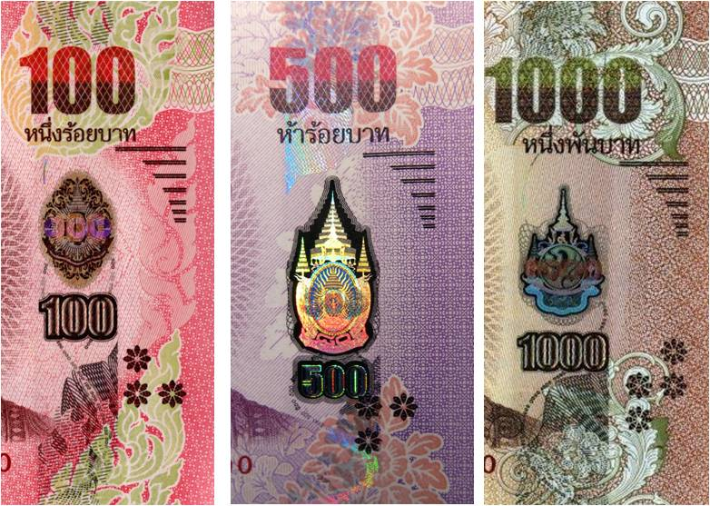

เนื่องจากเศรษฐกิจไม่ค่อยดีและมีบางบุคคลคิดจะฉ้อโกงด้วยการใช้ธนบัตรปลอม
วิธีการสังเกตธนบัตรปลอมมีจุดสังเกตหลายจุดเช่น
1.ผิวสัมผัสของเนื้อกระดาษ
ผิวสัมผัสของกระดาษธนบัตรแท้จะให้ความรู้สึกต่างกับเนื้อกระดาษปกติ และเนื้อกระดาษมีความทนทานและไม่ยุ่ยง่าย
2.ลายพิมพ์เส้นนูน
จะเป็นลายพิมพ์ที่มีลักษณะคมชัดละนูนขึ้นมาจากผิวกระดาษ ตั้งแต่คำว่า "รัฐบาลไทย" ตัวอักษรและตัวเลขแจ้งชนิดราคา
3.ลายน้ำลายน้ำเป็นตัวหนังสือบางซึ่งถ้าไม่ส่องกับแสงไฟจะไม่สามารถเห็นได้
ภาพตัวอย่าง
| ธนบัตรแบบที่ | 20 | 50 | 100 | 500 | 1000 |
|---|---|---|---|---|---|
| แบบที่17 | |||||
| แบบที่16 | |||||
4.ภาพซ้อนทับ
เป็นการพิมพ์รวดรายตัวเลขทั้ง2ด่านให้ประคบต่อกันได้พอดี
แบบที่17
แบบที่16
5.ตัวเลขแฝง
ตัวเลขแจ้งชนิดราคาซ่อนอยู่ในลายประดิษฐ์ มองเห็นได้เมื่อเอียงธนบัตรเข้าหาแสงสว่าง
แบบที่17
แบบที่16
6.แบบฟอยล์ภาพ3มิติ
ผนึกไว้ตามแนวตั้ง ภายในมีภาพที่เป็นมิติ เมื่อพลิกเอียงธนบัตรไปมาจะเห็นองค์ประกอบต่างๆ ในแถบฟอยล์เคลื่อนไหว และเปลี่ยนสีสะท้อนแสงวาววับสวยงาม
แบบที่16
